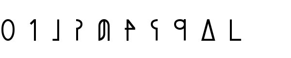

Sitemap
Contents Menu
이전 페이지로
인물소개
인사말
환자
어순
과거, 진행, 완료
부사
계사(be동사)
의문문, 부정문
명령, 의뢰, 금지
대명사
격사(전치사)
관계사
강세와 방언
숫자
접속사, 순사
사생동사, 마치며
지구에는 여러 가지 언어가 있지만 숫자는 대개 어디를 가나 아라비아 숫자지. 아르바자드는 이세계니까 아라비아 숫자는 없다는 거야? 없지……아라비아 숫자. 대신 이런 숫자를 쓰고 있어. (0~9까지)  ☆읽는 법 0：yuu 1：ko 2：ta 3：vi 4：val 5：lin 6：kis 7：nol 8：ten 9：los 0이랑 1 말고 하나도 못 읽겠소이다(－ω－) 다만 세는 방법은 10진법이니까 들어가기는 쉽지 않을까. 참고로 4, 5, 6과 7, 8, 9는 단어 끝에 규칙적으로 l, n, s가 오니까 외울 때 써먹으면 좋을 거야. 숫자를 세는 방법은 한국어와 똑같아. 10은 on이라고 해. 13은 on과 vi를 합쳐서 onvi. 20은 ta와 on을 합쳐서 taon. 백이나 천은 뭐라고 해? 백은 gal, 천은 kot, 만은 sen이야. 예를 들어 24,345의 경우 tasen valkot vigal valon lin이라고 읽어. 한국어와 달리 일만은 kosen이 아니라 그냥 sen이라고 하니까 조심하렴. 그렇구나. 그런데 ‘4명의 소녀’는 뭐라고 해? val fian이야. ‘명’이나 ‘개’ 같은 조수사는 아르카에 없으니까 명사 앞에 숫자를 놓기만 하면 돼. 참고로 fian val로 해서 명사 뒤에 붙일 수도 있어. 이 경우 ‘4번째 소녀’라는 서수가 돼. 오호, 그거 참 편리한데! 붙이는 장소만 바꾸면 번호가 되는구나.